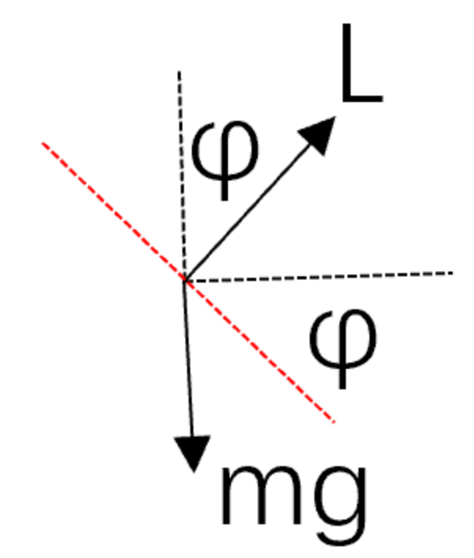
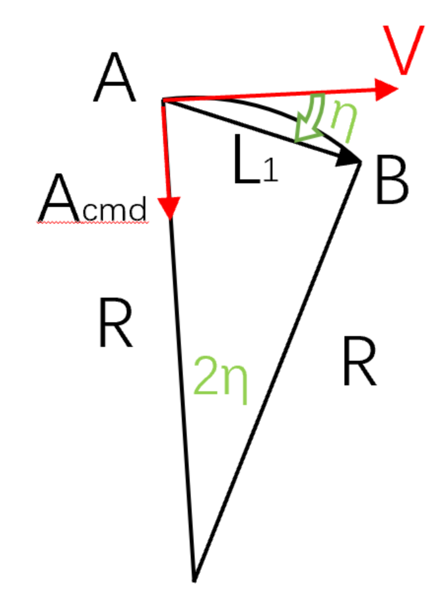
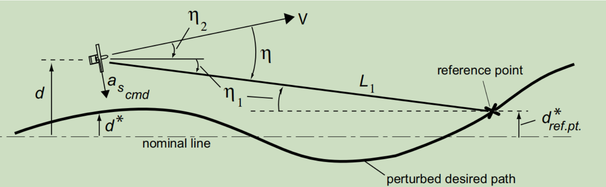
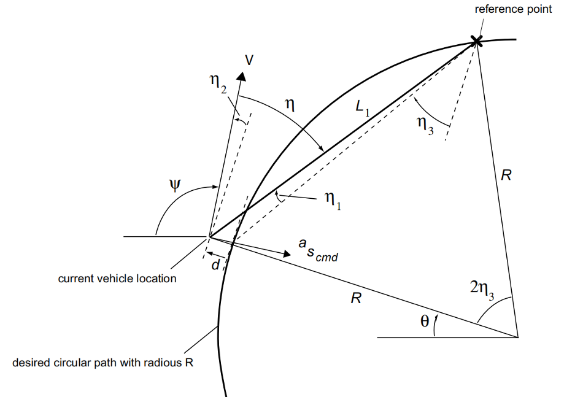

固定翼位置控制
纵向—TECS
总能量
飞机的总能量：$\mathrm{E}=m g h+\frac{1}{2} m V^2$
两边同时除以质量m：$E_s=g h+\frac{1}{2} V^2$
求导：$\dot{E}_s=g \dot{h}+V \dot{V}=g V_z+V \dot{V}$
TECS表达式：
物理量的来源
高度h和高度变化率$\dot h$：
实际值：气压高度和EKF的Z轴速度，如果没有z轴惯导，使用三阶互补滤波对h、Vz进行估计
目标值：1.高度目标：输入值，用最大爬升/下滑速率限幅，一阶滤波处理
2.高度变化率目标：(目标高度-气压高)K1+(当前目标高度-上一刻目标高度)/dtK2
速度V和速度变化率$\dot V$：
实际值：
1.速度：二阶互补滤波得到
2.速度变化率：speed_deriv = sinθ*g + accel_x目标值：
1.速度目标：TAS_sp=EAS_speas2tas
2.速度变化率目标：两次速度目标值的误差速度误差增益(1/s)
总能量STE、势能SPE、动能SKE计算
| SPE | SKE | |
|---|---|---|
| estimate | vert_pos_state*g | 0.5*TAS_state^2 |
| rate | vert_vel_state*g | TAS_state * _speed_derivative |
| sp | hgt_sp_adj * g | 0.5*TAS_sp_adj^2 |
| rate_sp | hgt_rate_sp * g | TAS_state * TAS_rate_sp |
即：
| SPE | SKE | |
|---|---|---|
| value | g*H | 0.5*V² |
| rate | Vz*g | $V*\dot V$ |
总能量误差STE
1 | STE_error = STE(目标值-实际值) |
油门值初步计算
能量增加(STE_rate_sp>0)，$预测油门=巡航油门+\frac{STE_rate_sp}{STE_rate_max} *(最大油门- 巡航油门)$
能量减小(STE_rate_sp<0)，$预测油门=巡航油门+\frac{STE_rate_sp}{STE_rate_min} *(最小油门- 巡航油门)$
STE_error通过PI得到油门值
油门比例值=(STE_error+STE_rate_error*K)*能量到油门的因子+预测油门
油门积分值=STE_error*K*dt*能量到油门的因子
空速可用，油门值=油门比例值+油门积分值；空速不可用，油门值=预测油门能量到油门的因子 = 1.0/(油门时间常数 * (STE_rate_max - STE_rate_min))
【油门时间常数默认值为8】
【STE_rate_max = max_climb_rate g】【STE_rate_min = - min_sink_rate g】
能量权重得到SEB
动能权重SKE_weight，势能权重SPE_weight【0为0%权重，2为100%权重】
1 | SEB = SKE*SKE_weight + SPE*SPE_weight |
SEB_error通过PI得到俯仰角指令
SEB误差比例值 = SEB_error + SEB_rate_error*Kd + SEB_rate_sp * Kp
若爬升模态，SEB误差比例值+=最小俯仰角*俯仰角到能量的因子
SEB误差积分值 += SEB_error*Ki*dt
目标俯仰角=(SEB误差比例值+SEB误差积分值)/俯仰角到能量的因子俯仰角到能量的因子=TAS_state * 俯仰时间常数 * g
【俯仰时间常数默认值为5】
横侧向—L1
受力分析

无人机滚转时
②/①得：
即，$\varphi=\tan ^{-1} \frac{a}{g}$
几何分析

L1计算
其中，
L1_damping=0.75；L1_period=25，此时得到的L1_ratio=5.9683
线性化
跟随一条直线
【方向偏移量+位置偏移量】

假设角度很小$\sin \eta \approx \eta=\eta_1+\eta_2$
当忽略内环动力学和$\eta _2$，则$a_{c m d}=-\ddot{d}$
则上述方程为：
其中，$\zeta=1/\sqrt 2$，$\omega_n=\sqrt 2/L_1$【这表明，跟随直线时，系统是一个二阶系统，频率为0.7071，阻尼与无人机的速度和距离有关】
跟随曲线

假设角度很小$\sin \eta \approx \eta=\eta_1+\eta_2$
同样可得
转化为L(s)得：
其中，$\zeta=1/\sqrt 2$，$\omega_n=\sqrt 2/L_1$【这表明，跟随曲线时，系统等效为一个二阶低通线性系统，频率为0.7071，阻尼与无人机的速度和距离有关】
跟随圆
【到圆弧的方向偏移量+到圆弧的位置偏移量+圆弧处的向心加速度】

假设$\eta_1 \approx 0, \eta_2 \approx 0,\left|\eta_3\right| \gg 0$
$\psi-\theta+\frac{\eta_2}{2}=\frac{\pi}{2}$，可得$\dot{\psi}=\dot{\theta}-\dot{\eta}_2$
$\dot{\mathrm{d}}=\mathrm{V} \sin \eta_2 \approx \mathrm{V} \eta_2$ ，因此 $\ddot{\mathrm{d}} \approx \mathrm{V} \eta_2$
有$V \dot{\theta}=\frac{\mathrm{V}^2}{\mathrm{R}}$ ，则 $a_{c m d} \approx \frac{\mathrm{V}^2}{\mathrm{R}}-\ddot{d}$
根据假设，$\sin \eta_3=\frac{L_1}{2 R}$，则令$c \equiv \cos \eta_3 \approx \sqrt{1-\left(\frac{L_1}{2 R}\right)^2}$
其中， $\eta_1 \approx \sin \eta_1 \approx \frac{d \cos \eta_3}{L_1}, \eta_2 \approx \sin \eta_2 \approx \frac{d}{V}$,
因此，
【到圆弧的侧偏值+到圆弧的切线方向+圆弧上的向心加速度】
$\ddot{d}+2 \zeta \omega_n \dot{d}+\omega_n^2 \approx 0$,其中， $\zeta=1 / \sqrt{2} ， \omega_n=\sqrt{2} V c / L_1$